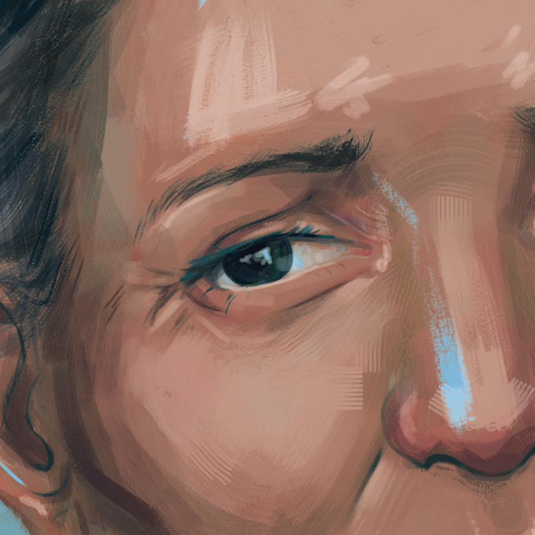
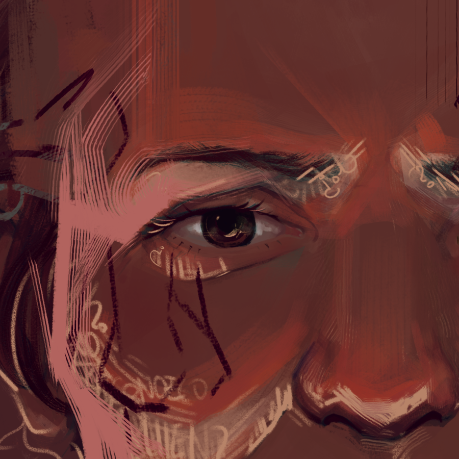
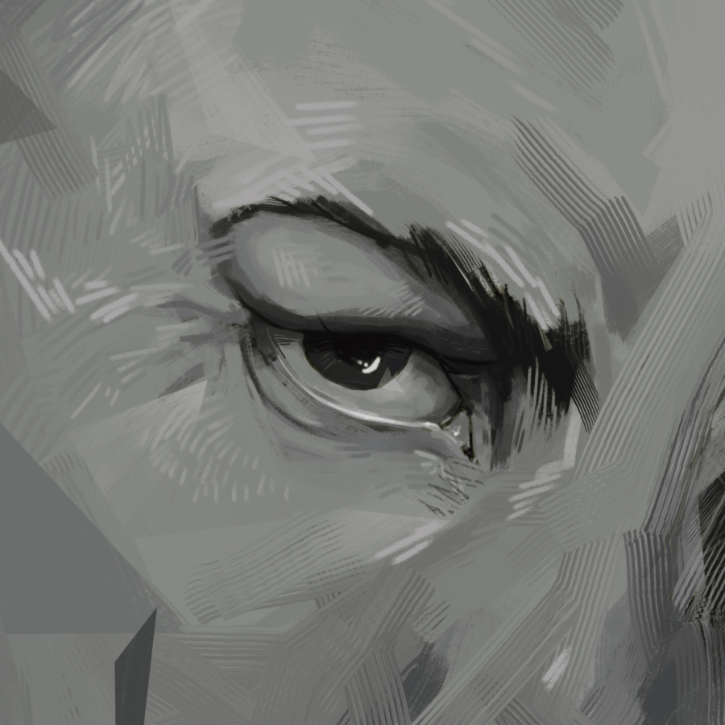

> annichilare@_:~$ sudo
[scroll]
> annichilare@_:~$ sudo

Mi trabajo artístico se centra en representar los estados mentales humanos, explorando las complejidades y ambigüedades de nuestra mente a través de una fusión entre lo figurativo y lo abstracto. Utilizo las técnicas que estén a mi alcance y con las que me sienta cómodo para transmitir mi mensaje, tanto en tradicional como en arte digital.
Cada obra surge de un proceso introspectivo, a menudo largo, donde intento capturar la esencia de lo intangible, haciendo tangible lo que solo puede percibirse pensando y analizando nuestros comportamientos. A través de mis obras invito al espectador a reflexionar sobre su propia relación con sus pensamientos y emociones.
Mi objetivo es provocar una pausa, una reflexión profunda sobre los estados mentales que todas las personas compartimos, pero que rara vez logramos entender o expresar completamente. Al entrelazar la figuración con lo abstracto, busco abrir un espacio para la interpretación personal, permitiendo que cada espectador se conecte con la obra desde su propia experiencia interna.


